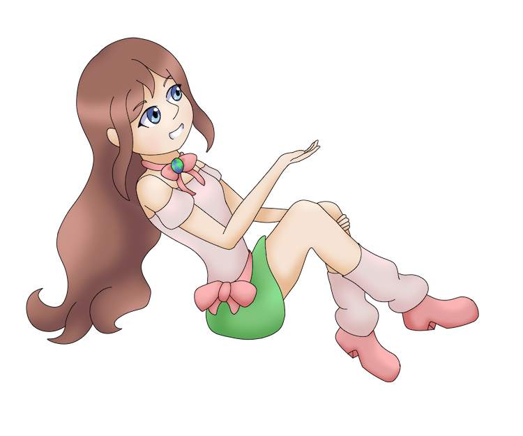
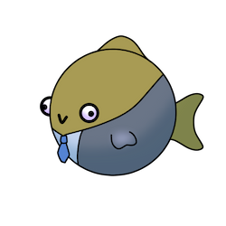

 {Digital Garden} Geologie, Characters, Ideeën Interacties Characters Garden Notes Over Remark
Er worden op deze site standaard cookies gebruikt vanuit het hostingplatform en royalty-vrije afbeeldingensite Pixabay. Daarnaast zijn er aanvullende cookies nodig voor het inladen van de Digitaal Tuintje webring. Sta je deze cookies toe? Allow Deny